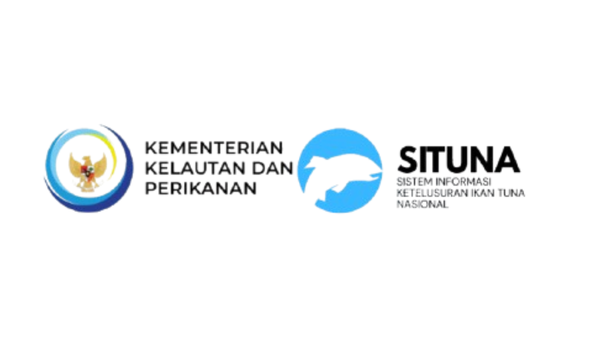

SITUNA
SISTEM INFORMASI KETELUSURAN IKAN TUNA NASIONAL
PASPORT LOT TUNA
Terverifikasi
Nomor Register Lot
TT-2026-OCT-8892
Suhu Inti
-1.2°C
Suhu Udara
28.5°C
Pendaratan
06:30
Zona Tangkap:
WPPNRI 572 (Samudera Hindia)
Pelabuhan:
PPS Lampulo, Banda Aceh
Kapal Penangkap
KM. Barokah Jaya 02
Total Bobot / Grade
1.450 Kg / Grade A